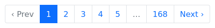
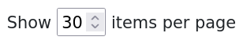

#
Pagy


#
🏆 The Best Pagination Ruby Gem 🥇
Pagy is focused on performance and flexibility.
#
~ 40x Faster!

#
~ 36x Lighter!
#
~ 35x Simpler!

#
~ 1,410x More Efficient!

Each dot in the visualization above represents the resources that Pagy consumes for one full rendering. The other gems consume hundreds of times as much for the same rendering.
The IPS/Kb ratio is calculated out of speed (IPS) and Memory (Kb): it shows how well each gem uses each Kb of memory it allocates/consumes.
See the Detailed Gems Comparison for full details.
#
🤩 It does it all. Better.
- It works in any environment
With Rack frameworks (Rails, Sinatra, Padrino, etc.) or in pure ruby without Rack - It works with any collection
With any ORM, any DB, any search gem, elasticsearch_rails, meilisearch, searchkick,ransack, and just any list, even if you cannot count it - It supports all kinds of pagination
calendar, countless, geared, incremental, auto-incremental, infinite, headers, JSON, cursor - It supports all kinds of CSS Frameworks
bootstrap, bulma, foundation, materialize, semantic, uikit, tailwind - It supports faster client-side rendering
With classic or innovative UI components (see Javascript Components) or by serving JSON to your favorite Javascript framework - It has 100% of test coverage for Ruby, HTML and Javascript E2E (see Pagy Workflows CI)
#
Code Structure
- Pagy has a very slim core code very easy to understand and use.
- It has a quite fat set of optional extras that you can explicitly require for very efficient and modular customization (see extras)
- It has no dependencies: it produces its own HTML, URLs, i18n with its own specialized and fast code
- Its methods are accessible and overridable right where you use them (no pesky monkey-patching needed)
#
Unlike the other gems
- Pagy is very modular and does not load any unnecessary code (see why...)_
- It doesn't impose limits even with collections|scopes that already used
limitandoffset(see how...) - It works with fast helpers OR easy to edit templates (see more...)
- It raises
Pagy::OverflowErrorexceptions that you can rescue from (see how...) or use the overflow extra for a few ready to use common behaviors - It does not impose any difficult-to-override logic or output
#
😎 It's easy to use and customize
Code for basic pagination...
# Include it in the controllers (e.g. application_controller.rb)
include Pagy::Backend
# Include it in the helpers (e.g. application_helper.rb)
include Pagy::Frontend
# Wrap your collections with pagy in your actions
@pagy, @records = pagy(Product.all)Optionally set your defaults in the pagy initializer:
# Optionally override some pagy default with your own in the pagy initializer
Pagy::DEFAULT[:items] = 10 # items per page
Pagy::DEFAULT[:size] = [1,4,4,1] # nav bar links
# Better user experience handled automatically
require 'pagy/extras/overflow'
Pagy::DEFAULT[:overflow] = :last_page<%# Render a view helper in your views (skipping nav links for empty pages) %>
<%== pagy_nav(@pagy) if @pagy.pages > 1 %>Or, choose from the following view helpers:
| View Helper Name | Preview (Bootstrap Style shown) |
|---|---|
pagy_nav(@pagy) |
 |
pagy_nav_js(@pagy) |
 |
pagy_info(@pagy) |
 |
pagy_combo_nav_js(@pagy) |
|
pagy_items_selector_js |
 |
pagy_nav(@calendar[:year])pagy_nav(@calendar[:month])(other units: :quarter, :week, :day and custom) |
 |
(See the Quick Start)
Customization for CSS frameworks...
# Require a CSS framework extra in the pagy initializer (e.g. bootstrap)
require 'pagy/extras/bootstrap'<%# Use it in your views %>
<%== pagy_bootstrap_nav(@pagy) %>(See all the CSS Framework Extras)
Customization for special collections...
# Require some special backend extra in the pagy initializer (e.g. elasticsearch_rails)
require 'pagy/extras/elasticsearch_rails'
# Extend your models (e.g. application_record.rb)
extend Pagy::ElasticsearchRails
# Use it in your actions
response = Article.pagy_search(params[:q])
@pagy, @response = pagy_elasticsearch_rails(response)(See all the Search Extras)
Customization for client-side|JSON rendering...
# Require the metadata extra in the pagy initializer
require 'pagy/extras/metadata'
# Use it in your actions
pagy, records = pagy(Product.all)
render json: { data: records,
pagy: pagy_metadata(pagy) }(See all the Backend Tools)
Customization for headers pagination for APIs...
# Require the headers extra in the pagy initializer
require 'pagy/extras/headers'
# Use it in your actions
pagy, records = pagy(Product.all)
pagy_headers_merge(pagy)
render json: records(See all the Backend Tools)
More customization with extras...
Extras add special options and manage different components, behaviors, Frontend or Backend environments... usually by just requiring them (and optionally overriding some default).
#
Backend Extras
- arel: Provides better performance of grouped ActiveRecord collections
- array: Paginate arrays efficiently.
- calendar: Add pagination filtering by calendar time unit (year, quarter, month, week, day, custom)
- countless: Paginate without the need of any count, saving one query per rendering
- elasticsearch_rails: Paginate
ElasticsearchRailsresponse objects - headers: Add RFC-8288 compliant http response headers (and other helpers) useful for API pagination
- meilisearch: Paginate
Meilisearchresults - metadata: Provides the pagination metadata to Javascript frameworks like Vue.js, react.js, etc.
- searchkick: Paginate
Searchkick::Resultsobjects
#
Frontend Extras
- bootstrap: Add nav helpers and templates for the Bootstrap pagination component
- bulma: Add nav helpers and templates for the Bulma CSS pagination component
- foundation: Add nav helpers and templates for the Foundation pagination component
- materialize: Add nav helpers for the Materialize CSS pagination component
- navs: Adds the unstyled versions of the javascript-powered nav helpers.
- semantic: Add nav helpers for the Semantic UI CSS pagination component
- tailwind: Ready to use style snippet for Tailwind CSS
- uikit: Add nav helpers and templates for the UIkit pagination component
#
Extra Features and Tools
- Pagy::Console: Use pagy in the irb/rails console even without any app nor configuration
- gearbox: Automatically change the number of items per page depending on the page number
- i18n: Use the
I18ngem instead of the faster pagy-i18n implementation - items: Allow the client to request a custom number of items per page with an optional selector UI
- overflow: Allow easy handling of overflowing pages
- standalone: Use pagy without any request object, nor Rack environment/gem, nor any defined
paramsmethod - support: Add support for countless or navless pagination (incremental, auto-incremental, infinite pagination).
- trim: Remove the
page=1param from the first page link
See also the How To Page
#
🤓 It's well documented and supported
Documentation
Support
Screencasts (12 entries)
#
SupeRails


 and Hotwire + Infinite (Countless) Pagination")

#
GoRails

 + Deep dive into building a sample Blogging Application")
#
CJ Avilla

#
Mike Rogers
")
#
Deanin
")
")
#
Mix & Go

#
Raul Palacio (Spanish)

Posts and tutorials (20 entries)
- Migrate from WillPaginate and Kaminari (practical guide)
- Detailed Gems Comparison (charts and analysis)
- Benchmarks and Memory Profiles Source (Rails app repository)
- Faster Pagination with Pagy introductory tutorial by Sirajus Salekin
- Pagy with Templates Minipost by aloucas
- Pagination with Pagy by Tiago Franco
- Quick guide for Pagy with Sinatra and Sequel by Victor Afanasev
- Integrating Pagy with Hanami by Pawe witkowski
- Stateful Tabs with Pagy by Chris Seelus
- Endless Scroll / Infinite Loading with Turbo Streams & Stimulus by Stefan Wienert.
- Build Load More Pagination with Pagy and Rails Hotwire by Maful. (This tutorial shows how you can turbo_stream with GET requests).
- Pagination with Hotwire by Jonathan Greenberg
- Pagination and infinite scrolling with Rails and the Hotwire stack by David Colby
- Building a dynamic data grid with search and filters using rails, hotwire and ransack by Benito Serna.
- Pagination for Beginners: What is it? Why bother? by Ben Koshy.
- Handling Pagination When POSTing Complex Search Forms by Ben Koshy.
- How to Override pagy methods only in specific circumstances by Ben Koshy.
- How to make your pagination links sticky + bounce at the bottom of your page by Ben Koshy.
#
📦 Repository Info
What's new in 6.0
- New improved documentation
- New finite pagination for meilisearch extra
- New
:request_pathvariable allows overriding the request path for pagination links (turbo frames) - Fix for the args forwarding in the
Pagy::Countless#seriesfor Ruby 3 - Removed support for 5.0 deprecations (see the Changelog)
How to contribute
- Pull Requests are welcome!
- For simple contribution you can quickly check your changes with the Pagy::Console or with the single file pagy_standalone_app.ru.
- If you Create A Pull Request, please ensure that the "All checks have passed" indicator gets green light on the Pull Request page (if it's not enabled, a maintainer will enable it for you).
Versioning
- Pagy follows the Semantic Versioning 2.0.0. Please, check the Changelog for breaking changes introduced by mayor versions. Using pessimistic version constraint in your Gemfile will ensure smooth upgrades.
Branches
- The
masterbranch is the latest rubygem-published release. It also contains docs and comment changes that don't affect the published code. It is never force-pushed. - The
devbranch is the development branch with the new code that will be merged in the next release. It could be force-pushed. - Expect any other branch to be internal, experimental, force-pushed, rebased and/or deleted even without merging.
#
💞 Related Projects
- pagy-cursor An early stage project that implements cursor pagination for AR
- grape-pagy Pagy pagination for the grape API framework
#
👏 Credits
Many thanks to:
- Ben Koshy for his contributions to the documentation, user support and interaction with external frameworks
- GoRails for the great Pagy Screencast and their top notch Rails Episodes
- Imaginary Cloud for continually publishing high-interest articles and helping to share Pagy when it just started
- JetBrains for their free OpenSource license
- The Contributors for all the smart code and suggestions merged in the project
- The Stargazers for showing their support